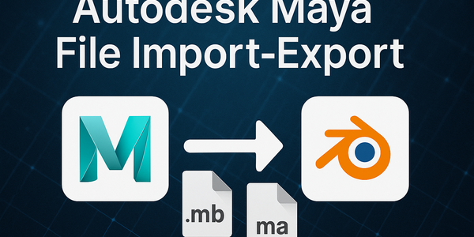
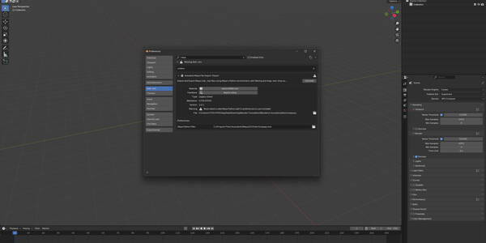
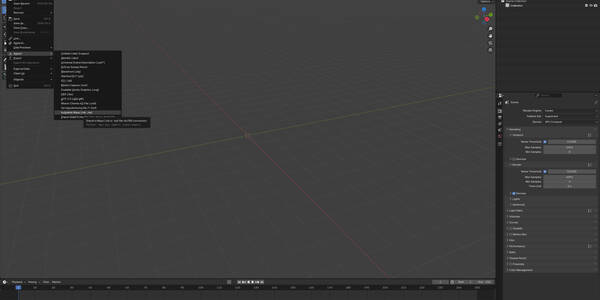
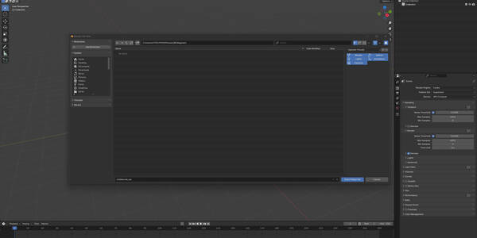
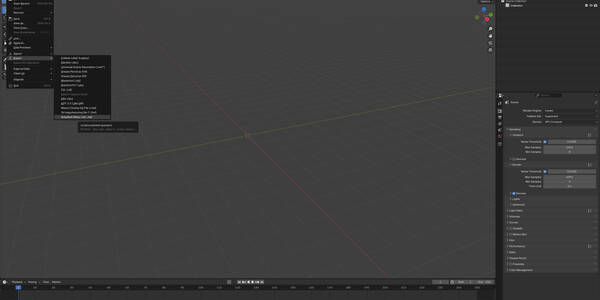
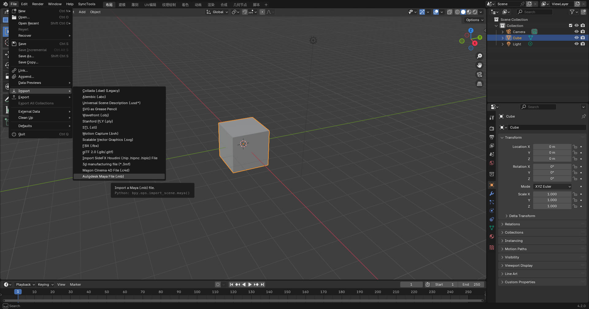
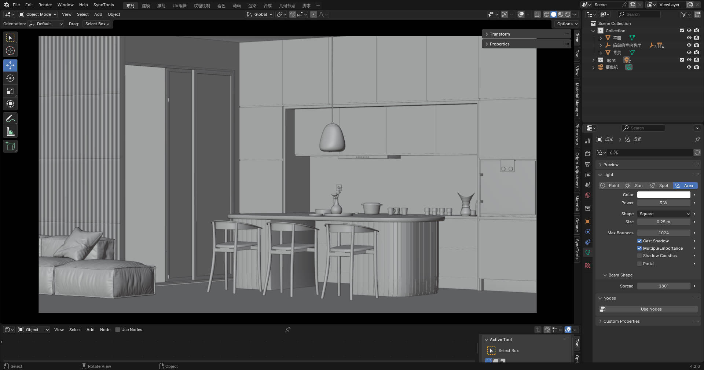
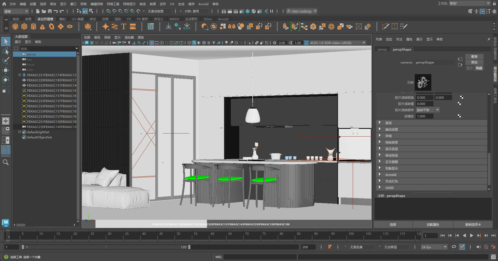
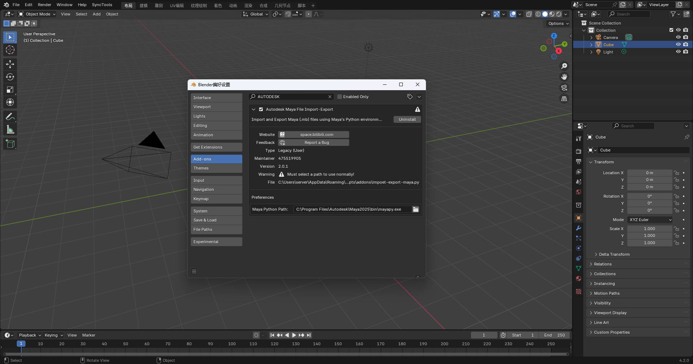

Autodesk Maya文件 导入-导出 (.mb .ma)
这款强大且用户友好的插件简化了Blender与Autodesk Maya之间的工作流程，让您可以直接在Blender界面中导入和导出.mb和.ma文件——无需手动启动Maya。
它在后台利用Maya的Python环境（mayapy.exe）来读取和转换Maya原生资产。因此需要本地安装Autodesk Maya，但在过程中无需打开Maya本身。

3D 模型s: 高保真几何体和UV传输，顺畅的跨平台兼容性。
动画: 支持绑定和关键帧动画。
材质: 通过FBX传输标准材质；复杂的Maya着色器网络可能需要手动调整。
角色资产: 包含绑定的网格、骨骼和蒙皮数据，可在Blender中进一步编辑和渲染（通过FBX转换）。
摄像机 & Lights: 基本摄像机参数和灯光设置得到保留。


操作系统: Windows
所需软件: Blender 3.0+和Autodesk Maya 2018或更新版本（必须安装）
设置: 在插件偏好设置中，指定Maya的Python解释器路径（mayapy.exe）
无侵入性: Maya无需打开——转换完全在后台进行。

非常适合同时使用Maya和Blender的艺术家、动画师和工作室，该插件：
减少繁琐的导出/导入步骤
保持跨格式的保真度
在传输过程中保持创意资产的完整性
我们每月自豪地将该插件收入的一部分捐赠给Blender基金会，支持开源三维创作的未来。您的购买将助力创意社区的创新。
Maya安装要求: 与C4D工作流程不同，该插件依赖mayapy.exe来访问原生文件，因此必须安装Maya。
仅支持Windows（目前）: 当前实现包含硬编码的Windows路径 (e.g., C:\\Program 文件\\Autodesk\\Maya2025\\...). 若支持macOS/Linux，需要跨平台路径检测或手动配置。
实际表述: 我们强调实际的简化作用，而非称其为“革命性的”，因为它依赖外部软件。
用户指南 for Blender (v 2.0.1)
Autodesk Maya文件 导入-导出 允许您在 Blender 中直接读写原生 Maya .mb / .ma 文件。
工作流 简述
Blender side – 选中的对象将被导出为临时 FBX 文件。
Maya Standalone (mayapy) – FBX 文件将被转换为/Maya 文件，无需启动 Maya 界面。
Blender side – 最终文件将自动导入或保存。
键 优势
无需 open Maya’s GUI
精细筛选 (网格, Lights, 摄像机, 样条线s, 动画s, 材质, Armatures)
拖放 import, 批量转换, 详细日志记录, 自动缓存清理
| 组件 | 最低 / 推荐配置 |
|---|---|
| Blender | 4.2.0 + (Windows / macOS / Linux) |
| Autodesk Maya | 2018 – 2025 并安装了 mayapy |
| 磁盘 space | ≥ 2 GB 可用空间（临时 FBX + 日志缓存） |
下载 the ZIP 从 GitHub 或 Blender Market 下载。
Blender → 编辑 › 偏好设置 › 插件 › 安装… → 选择 ZIP 文件 → 安装 插件.
启用 Autodesk Maya文件 导入-导出.
在插件-on 偏好设置中，设置路径到 mayapy:
默认路径（Windows）:
C:\Program 文件s\Autodesk\Maya2025\bin\mayapy.exe
macOS / Linux: 选择对应的 mayapy 可执行文件。
选择您要导出的对象。
文件 › 导出 › Autodesk Maya (.mb, .ma).
勾选要包含的资产类型 (网格, Lights, etc.).
选择文件 name and extension (.mb or .ma) → 导出 Maya文件.
进度和错误信息会写入 ~/文档/blender_maya_log.txt.
Tip – 导出动画 时，请勾选 动画s （可选骨架）并取消勾选其他所有选项。
方法 A – 菜单
文件 › 导入 › Autodesk Maya (.mb, .ma).
选择一个 .mb or .ma 文件。
在右侧-侧面板中选择要导入的内容。
启用 Maya Axis (180 ° X-flip) 如果您在 Blender 中使用 Y-上坐标。
导入 Maya文件.
方法 B – Drag & Drop
拖动 .mb / .ma 文件到 3D 视口或大纲视图 → 配置选项 → OK.
| 复选框 / 字段 | 图标 | 含义 (导出 ≈ 导入) |
|---|---|---|
| 模型s | 🞇 | 网格 对象 |
| Lights | 💡 | Light 对象 |
| 摄像机 | 📷 | 摄像机 |
| 样条线s | ➰ | 曲线 / splines |
| 动画s | 🎞️ | 键frames & bone animation |
| 材质 † | 🎨 | 保留材质槽 |
| Armatures † | 🦴 | 骨架 / 骨骼数据 |
| Maya Axis † | — | 旋转 +180 ° 绕 X 轴 (Y-上 ↔ Z-上) |
† 导入-选项。
| 路径 | Purpose |
|---|---|
~/文档/blender_maya_cache |
临时 FBX 文件（自动删除） |
~/文档/blender_maya_log.txt |
完整插件 + Maya Standalone 日志 |
检查日志 在出现问题时首先检查。
| 问题 | 可能原因 | 解决方法 |
|---|---|---|
| “mayapy not found” | 路径错误 / Maya 未安装 | 重新输入正确路径到 偏好设置 |
| 导出 在 0% 处冻结 | 不支持的对象 / 无写入权限 | 导出 仅所需资产；检查文件夹权限 |
| 导入ed 模型上下颠倒 | 坐标轴不匹配 | 启用 Maya Axis 导入时启用或手动旋转 |
| 日志 显示 fbxmaya.mll 错误 | Maya FBX 插件缺失 | 加载 fbxmaya.mll 在 Maya 中加载或重新安装 Maya |
坐标系 – 确定使用 Y-上还是 Z-上并保持一致；使用 Maya Axis （按需启用）。
导入 only what you need – 速度s 转换速度并保持文件较小。
定期清理缓存 如果您批量转换许多文件。
调整 FBX 版本 如果您需要旧版兼容性，请在脚本中调整。
拖放 import dialog
按资产类型筛选 材质 & Armatures
增强d 日志格式化和错误标签
自动临时 FBX 文件自动删除
提交 提交错误报告时，请包含：
Blender 和 Maya 版本
操作系统和 GPU 信息
相关日志摘录来自 blender_maya_log.txt
在两者之间愉快穿梭 Blender and Maya!